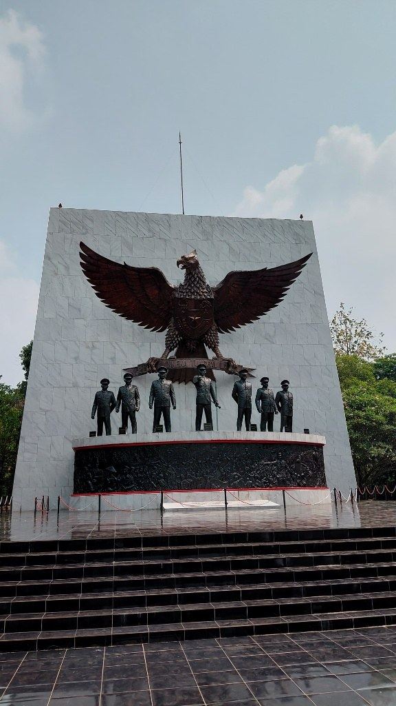
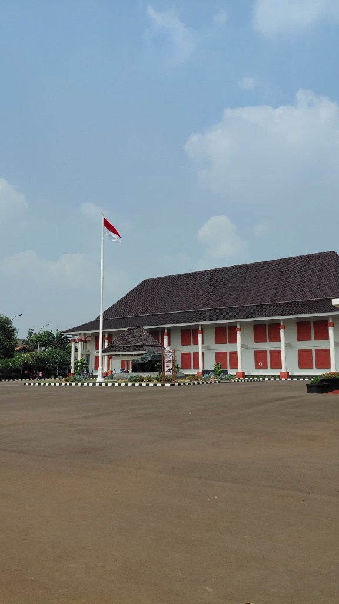
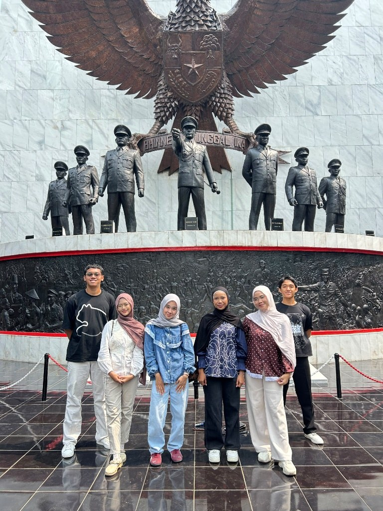
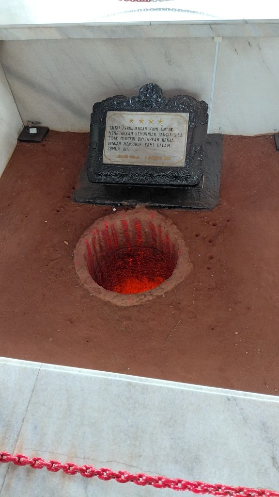
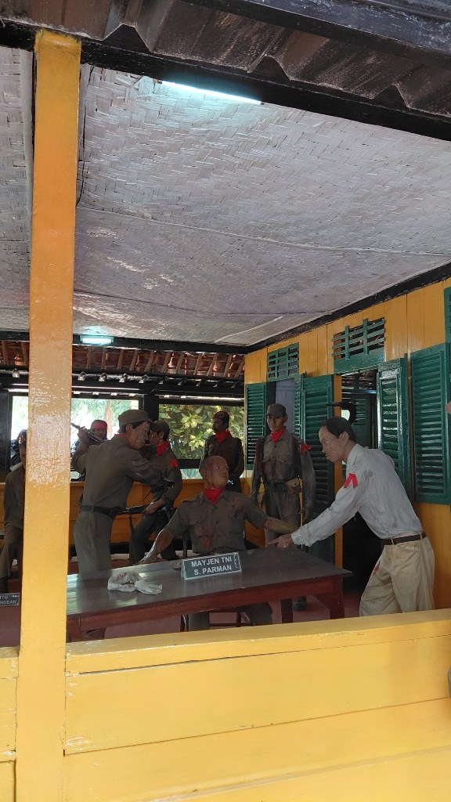
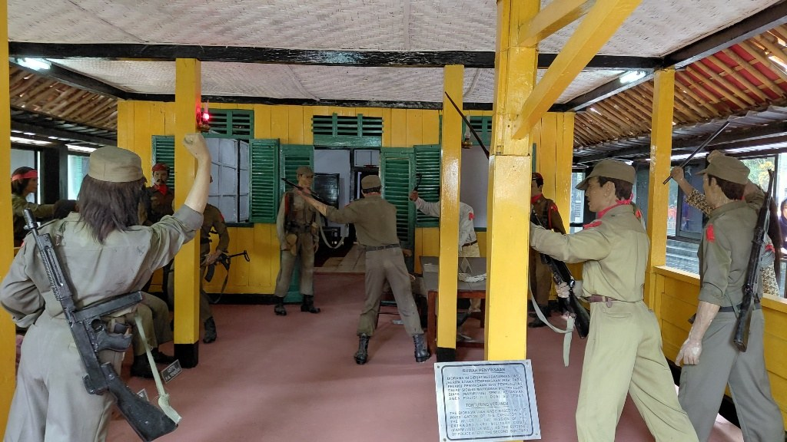
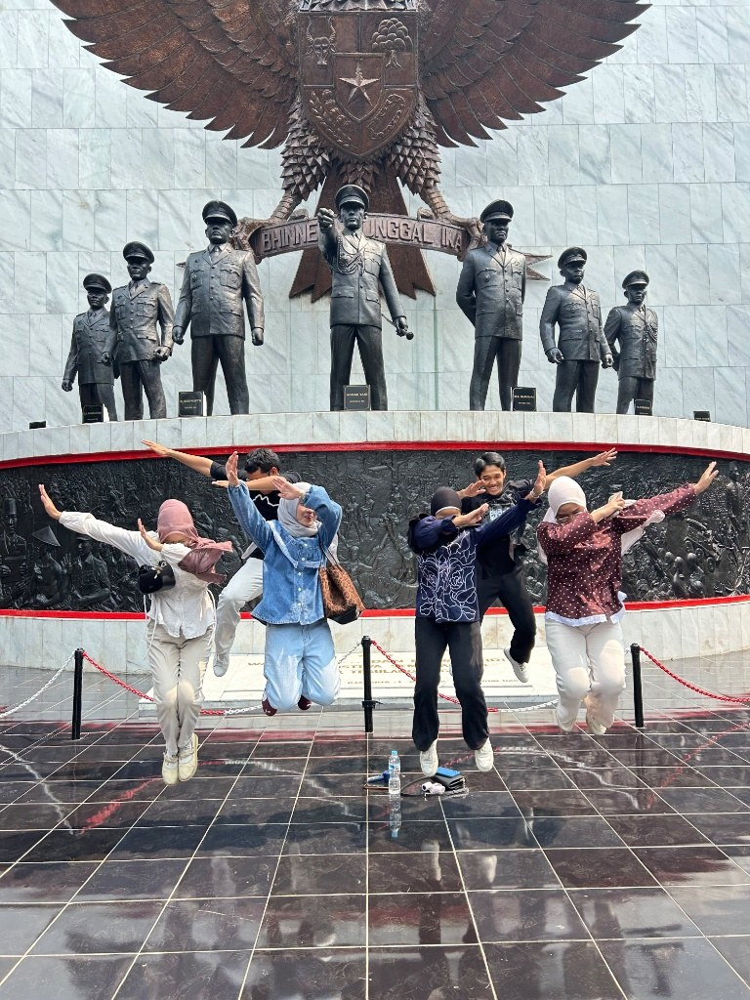
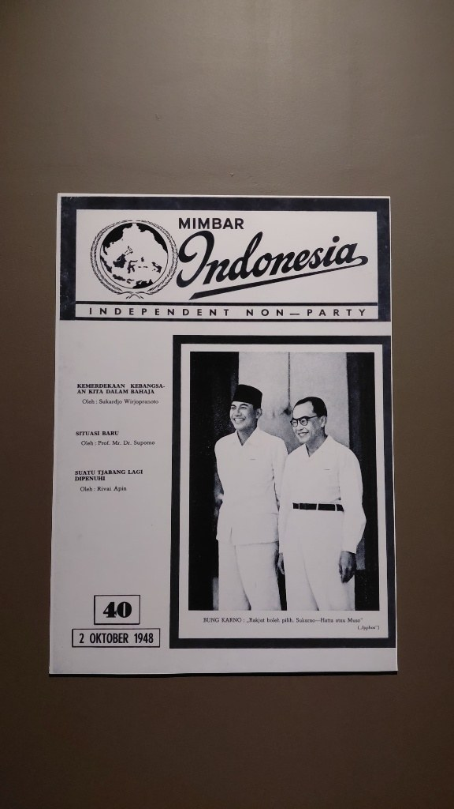
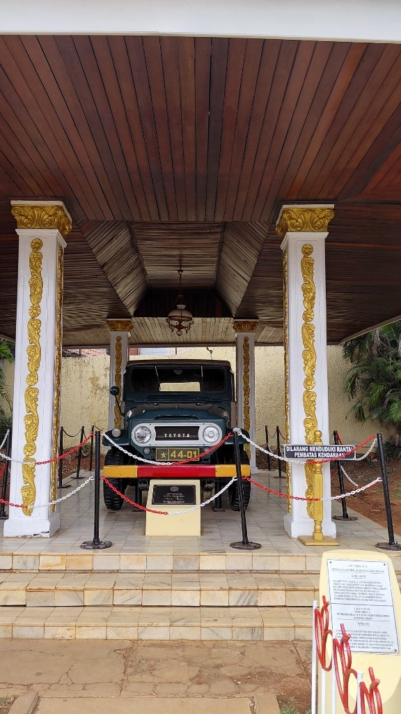
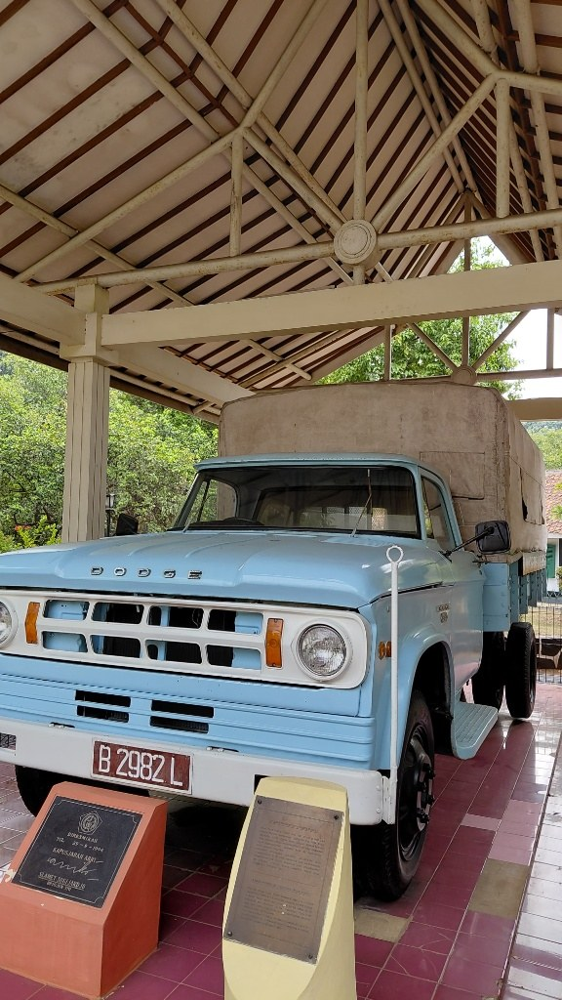

Jejak Langkah di Lubang Buaya: Menyaksikan Saksi Bisu Sejarah 1965
Catatan perjalanan edukasi menyusuri Kompleks Monumen Pancasila Sakti—membaca langsung arsip majalah Mimbar Indonesia edisi 1948, melihat dari dekat diorama Rumah Penyiksaan, berdiri di tepi Sumur Maut, hingga mengamati kendaraan dinas asli peninggalan masa pergolakan.
6 ZonaArea bersejarah dikunjungi
10 FotoDokumentasi asli lapangan
1948–1965Rentang arsip yang dipelajari
Disusun oleh: Catatan Pelajar Kelas XII•MAN 14 Jakarta•Mata Pelajaran Sejarah Indonesia

Ikon Kompleks • Lubang Buaya
Monumen Pancasila Sakti dengan dinding marmer putih, relief perunggu, dan patung tujuh Pahlawan Revolusi.
Melangkah ke Pelataran Luas yang Menyimpan Memori Bangsa

Lapangan Upacara Kompleks. Tiang bendera Merah Putih berdiri tegak tepat di hadapan gedung museum berjendela merah bata.
Ada perbedaan besar antara membaca sejarah lewat paragraf cetak di kelas dengan menginjakkan kaki langsung di tempat peristiwa itu pernah berlangsung. Itulah kesan pertama yang langsung kurasakan ketika rombongan kami tiba di Kompleks Monumen Pancasila Sakti, Lubang Buaya, Jakarta Timur.
Begitu melewati pintu masuk, pandangan langsung disambut lapangan upacara yang sangat lapang di bawah langit siang yang cerah. Bendera Merah Putih berkibar tenang di depan gedung besar beratap limasan gelap dengan deretan jendela merah bata yang khas—gedung Museum Pengkhianatan PKI (Komunis) yang di bagian serambi depannya terparkir kendaraan lapis baja Panser.
Suasana di kawasan ini terasa begitu teratur dan hening dibandingkan ramainya jalan raya Jakarta di luar pagar. Dari halaman terbuka inilah kami mulai menelusuri satu per satu zona bersejarah yang merangkum babak penting perjalanan Republik Indonesia.
BAB 02 • MONUMEN PANCASILA SAKTI
Kemegahan Tujuh Patung Perunggu di Bawah Sayap Garuda
Berjalan menyusuri jalur pepohonan rindang, kami akhirnya tiba di titik paling ikonik di kawasan ini: Monumen Pancasila Sakti. Tangga marmer hitam yang memantulkan cahaya mengantarkan tatapan mata naik ke relief perunggu berbingkai garis merah, lalu ke tujuh patung perunggu Pahlawan Revolusi yang berdiri tegak di depan lambang Burung Garuda Pancasila raksasa.
Relief panjang di kaki patung itu bukan sekadar hiasan arsitektur, melainkan pahatan kronologis yang menceritakan rangkaian peristiwa pergolakan 1965 hingga penegakan kembali Pancasila. Berdiri di pelatarannya membuat kami merasa kecil sekaligus takjub pada keteguhan para perwira yang gugur menjalankan tugas negara.
Dua Momen di Pelataran Monumen

DOKUMENTASI 01 • POTRET BERSAMA
Mengabadikan Langkah di Depan Relief Sejarah
Di sela-sela pengamatan, kami berenam menyempatkan diri berfoto rapi tepat di depan relief perunggu dan tujuh patung Pahlawan Revolusi. Meski suasana kunjungan sarat nilai sejarah yang khidmat, menjalaninya bersama teman-teman satu angkatan membuat pengalaman belajar di luar kelas terasa jauh lebih hidup dan hangat.
Klik tombol Pose Lompat di kanan atas untuk melihat sisi ekspresif dokumentasi kunjungan kami di spot yang sama!
Kartu Bolak-Balik: Mengenal 7 Pahlawan Revolusi
Klik kartu mana saja untuk membalik & membaca peran sejarahnya
BAB 03 • SUMUR MAUT & BANGUNAN ASLI
Keheningan Sumur Maut dan Serambi Kuning Rumah Penyiksaan
Jika area monumen memancarkan kemegahan, maka langkah berikutnya menuju Sumur Maut dan Rumah Penyiksaan langsung mengubah perasaan menjadi jauh lebih haru dan reflektif. Di area inilah peristiwa dini hari 1 Oktober 1965 benar-benar terjadi secara fisik.

Sumur Maut Lubang Buaya. Terlihat dari balik rantai merah—lubang tanah sempit berdiameter sekitar 75 cm dengan kedalaman 12 meter yang disorot cahaya merah dari dasar.

Sudut Dekat Diorama Rumah Penyiksaan. Rekonstruksi adegan interogasi dengan penanda nama Mayjen TNI S. Parman di atas meja kayu di serambi rumah kuning-hijau.
“Tjita² perdjuangan kami untuk menegakkan kemurnian Pantja Sila tidak mungkin dipatahkan hanja dengan mengubur kami dalam sumur ini.”
Hanya beberapa langkah dari pendopo sumur, berdiri Rumah Penyiksaan dengan dinding kayu kuning cerah, jendela krepyak hijau, dan langit-langit anyaman bambu yang masih dijaga keasliannya. Dari sudut pandang menyeluruh di beranda, terlihat deretan patung diorama seukuran manusia asli beserta papan keterangan dwibahasa (Rumah Penyiksaan / Torturing Veranda) yang menegaskan bahwa rekonstruksi ini disusun berdasarkan Berita Acara Pemeriksaan (BAP) sidang Mahmillub dan kesaksian Agen Polisi II Sukitman.

Serambi Rumah Penyiksaan (Torturing Veranda). Tampilan menyeluruh ruang diorama yang merekam ketegangan malam penculikan para perwira tinggi TNI AD.
Catatan Lapangan Spot Sekitar Sumur & Museum Paseban
Klik judul untuk membuka rincian kunjungan tiap bangunan
Tidak jauh dari Rumah Penyiksaan terdapat bangunan rumah penduduk asli yang pada malam 30 September 1965 dijadikan Pos Komando. Melihat interior kayunya yang sederhana bersama meja, kursi, dan lampu antik membuat kita sadar betapa dekatnya lokasi perancangan peristiwa besar itu dengan permukiman warga Lubang Buaya kala itu.
Bangunan sederhana lainnya yang kami lewati adalah Dapur Umum. Tungku dan peralatan memasak tempo dulu masih tersimpan rapi di dalamnya sebagai bukti bagaimana kebutuhan konsumsi personel yang berkumpul di kawasan Lubang Buaya disiapkan secara terorganisir.
Masuk ke dalam Museum Paseban menghadirkan pengalaman yang paling emosional. Di Ruang Relik, tersimpan barang-barang pribadi asli milik para Pahlawan Revolusi—mulai dari pakaian terakhir yang mereka kenakan, kacamata, jam tangan, hingga dokumentasi pengangkatan jenazah oleh tim gabungan RPKAD dan KKO-AL pada 4 Oktober 1965 sebelum dimakamkan secara kenegaraan di TMP Kalibata.
BAB 04 • ARSIP 1948 & KENDARAAN BERSEJARAH
Inspektor Artefak: Dari Majalah 1948 hingga Kendaraan Dinas Asli
Hal yang membuat kunjungan ke kompleks ini begitu kaya bukan hanya diorama 1965, melainkan juga arsip sejarah dan artefak kendaraan asli yang memperlihatkan rentang waktu konflik ideologi sejak era revolusi kemerdekaan. Salah satu temuan paling menarik di ruang pamer adalah salinan sampul majalah Mimbar Indonesia edisi 2 Oktober 1948, di samping deretan kendaraan bersejarah di pendopo luar seperti Jeep Toyota Land Cruiser ★ 44-01 dan Truk Dodge B 2982 L.
Pilih Artefak untuk Diinspeksi Detailnya
Klik tombol di bawah untuk berganti koleksi
BAB 05 • KURASI DOKUMENTASI
Galeri Lapangan: 10 Bingkai Perjalanan di Lubang Buaya
Saring koleksi foto berdasarkan kategori zona, lalu klik foto mana saja untuk melihat tampilan penuh dilengkapi thumbnail strip navigasi cepat di bagian bawah layar.
Pelataran Upacara
Monumen Pancasila Sakti
Potret Rapi di Monumen

Pose Lompat Kebersamaan
Sumur Maut
Diorama Mayjen S. Parman
Serambi Rumah Penyiksaan

Arsip Mimbar Indonesia 1948

Jeep Toyota ★ 44-01

Truk Dodge B 2982 L
BAB 06 • TANTANGAN INTERAKTIF
Cek Fakta Sejarah: Benar atau Salah?
Uji ketelitianmu membaca arsip dan catatan kunjungan di atas! Tentukan apakah setiap pernyataan sejarah berikut Benar atau Salah.
BAB 07 • REFLEKSI PENUTUP
Pelajaran yang Tertinggal Setelah Meninggalkan Lubang Buaya
Kunjungan ke Monumen Pancasila Sakti memberiku sudut pandang baru tentang arti belajar sejarah. Ketika melihat langsung arsip pers tahun 1948 yang merekam pilihan besar bangsa, berdiri di hadapan Sumur Maut yang sempit, lalu menyimak detail barang pribadi para jenderal di Museum Paseban, sejarah berhenti menjadi sekadar hafalan ujian—ia berubah menjadi pengingat tentang betapa mahalnya persatuan Indonesia.
Di tengah arus informasi modern yang sering memicu polarisasi dan kabar bohong, generasi muda punya tanggung jawab besar untuk tetap berpikir jernih, memverifikasi fakta, serta menjaga nilai-nilai Pancasila dalam kehidupan sehari-hari. Mengunjungi Lubang Buaya bersama teman-teman bukan hanya memenuhi tugas mata pelajaran Sejarah, melainkan juga menjadi perjalanan yang menumbuhkan rasa hormat lebih dalam kepada para pendahulu bangsa.
Tinggalkan Catatan Refleksimu
Punya kesan atau pesan setelah membaca jurnal kunjungan ini? Tulis singkat di bawah ini (tersimpan otomatis di browser perangkatmu).